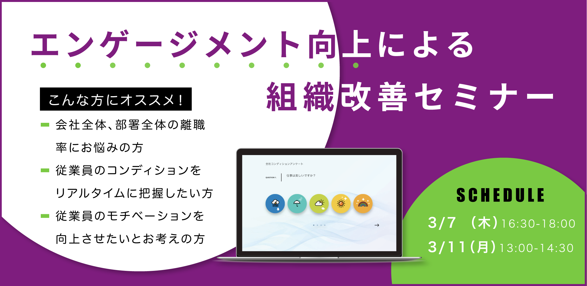

2018.12.25

突然ですが、 労働基準監督署対策は出来ておりますでしょうか？
『未払い賃金』『残業管理』『有給管理』等、 ご担当者様が意識しないといけない項目は多数あると思います。
実は昨年、労働基準監督署の指摘を受けた事業所の数は10,000以上にのぼります。 その中でも、7割以上が残業や有給関係の指摘でした。
世の中的にも、長時間労働や過労死が問題となり 『働き方改革』を推奨する動きが活発化しております。 そんな中、適切な労働時間管理が出来ていないと 労働基準監督署の監査が入った際に、 是正勧告を受け、検察庁に書類送検される可能性があります。